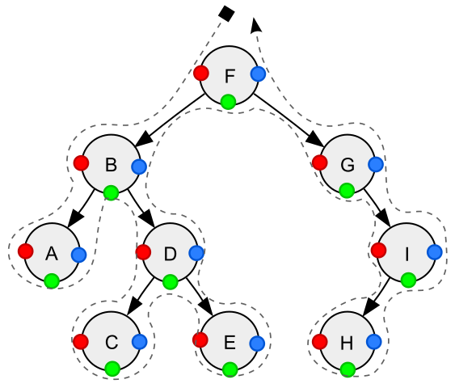

graph-theory-aez-notes
Table of Contents
Graph theory notes
Caterpillar tree
Wikipedia says:
In graph theory, a caterpillar or caterpillar tree is a tree in which all the vertices are within distance 1 of a central path.
Connected graphs
A graph is connected when there is a path between every pair of nodes.
Weakly connected graphs
A directed graph is weakly connected when replacing all directed edges with undirected ones yields a connected graph.
Trees
A forest is an acyclic, undirected graph and a tree is a connected forest. An arborescence is another name for a rooted directed graph where there is only one path from the root to each other node in the graph.
Spanning tree
A spanning tree of an undirected graph \(G\) is a subgraph that is a tree and contains all of the vertices of \(G\).
Depth-first search of a binary tree
This figure is a beautiful illustration of the different orderings of depth-first search of a binary tree, produced by Nomen4Omen for Wikipedia.
{kind=link}

Traversal of an ordered binary tree with keys A,B,C,D,E,F,G,H,I. (3 nodes with 2 children, 1 node with 1 left, 1 node with 1 right, and 4 nodes without child.) Access to node in preorder position only (red) yields the sequence F-B-A-D-C-E-G-I-H; in inorder position only (green) yields the sequence A-B-C-D-E-F-G-H-I; in postorder position only (blue) yields the sequence A-C-E-D-B-H-I-G-F.